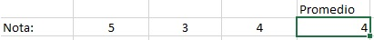
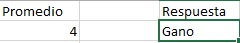
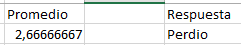

Excel
Promedio:
Ayuda a sacar el promedio de varios datos, y poder ver cual es la media de un cierto numero de datos,
esta función nos sirve mucho para digamos ver si va bien en algo, si esta encima del promedio o debajo, etc.
Su formula es: =PROMEDIO(Casilla de los datos)

If
Este nos ayuda a darle ciertas indicaciones al programa, por ejemplo:
Si es menor que cierto resulto, diga "Felicidades, ganaste" pero si es menor puede decir como "Perdiste"
Su formula es: =SI(Ubicación de la casilla >3; "(Texto si se cumple la funcion)"; "Lo contrario")


Excel